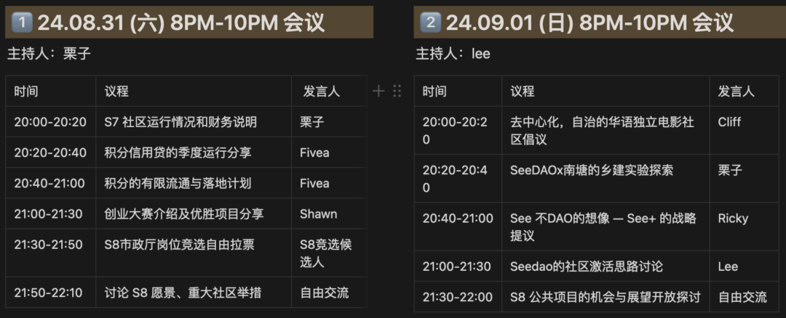
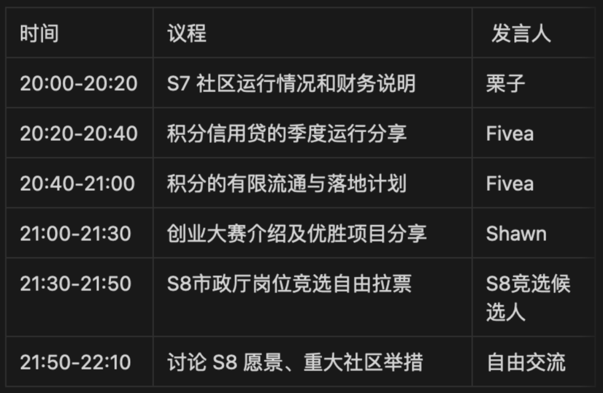

SeeDAO第八届节点共识大会 | 明晚8点开启 | 两天议题抢先看
作者: SeeDAO S7市政厅
分类:
SeeDAO, 共识大会
SeeDAO 第八届节点共识大会将于明晚(2024年8月31日)20:00 (北京时间UTC+8)开始，本次会议为期2天.

SeeDAO 第八届节点共识大会将于明晚(2024年8月31日)20:00 (北京时间UTC+8)开始，本次会议为期2天，整体会议议程如下：

📅议程详情可在 notion 查看：
第八届节点共识大会
https://seedao.notion.site/060cbf9e774a4a0098bd46920b6c1c97?pvs=4
🔔会议使用 Zoom 软件，请提前下载并注册: https://zoom.us/
💬加入 Zoom 会议
https://us06web.zoom.us/j/5393639014?pwd=lbFeLCrtz2Jwq7qrCBFpUKI2Gl8ROQ.1
会议号: 539 363 9014
密码: seedao
8.31 (六) 20:00-22:00 第一轮会议

9.01 (日) 20:00 - 22:00 第二轮会议
https://www.notion.so/seedao/060cbf9e774a4a0098bd46920b6c1c97
https://app.seedao.xyz/proposal
带大家来看一看本次节点共识大会相关的重要提案。
邀请各位 S8 节点对S7市政厅各公共岗位的工作做出评估，行使治理挖矿的权力职责，并投出宝贵的一票。
【S7市政厅岗位评估】治理协调-栗子：https://app.seedao.xyz/proposal/thread/205
【S7市政厅岗位评估】品牌协调-Jason：https://app.seedao.xyz/proposal/thread/207
【S7市政厅岗位评估】技术协调-Forever：https://app.seedao.xyz/proposal/thread/208
【S7市政厅岗位评估】财务官-Fivea：https://app.seedao.xyz/proposal/thread/206
【S7市政厅岗位评估】社区运营-Lee：https://app.seedao.xyz/proposal/thread/209
SeeDAO 市政厅是负责治理、品牌以及技术运营的综合性公共服务机构。第八届市政厅也即将由本届节点共识大会选举产生！
目前本届市政厅全部岗位的竞选演讲已完成，欢迎到 Notion 查看：
https://www.notion.so/seedao/254073b96b884fef81d61c3525688ffb
岗位竞选投票将于 8月31日 12:00 开启投票，至9月2日12:00结束为止，请各位 S8 节点对候选人进行了解和评估，行使治理挖矿的权力职责，并投出宝贵的一票 。
【S8市政厅竞选】治理协调岗位投票：https://app.seedao.xyz/proposal/thread/210
【S8市政厅竞选】品牌协调岗位投票：https://app.seedao.xyz/proposal/thread/211
【S8市政厅竞选】技术协调岗位投票：https://app.seedao.xyz/proposal/thread/212
【S8市政厅竞选】财务官岗位投票：https://app.seedao.xyz/proposal/thread/213
【S8市政厅竞选】社区运营岗位投票：https://app.seedao.xyz/proposal/thread/214
S8 社区总预算 ：https://app.seedao.xyz/proposal/thread/227
S9节点资格门槛设置投票-节点有效门槛：https://app.seedao.xyz/proposal/thread/201
S9节点资格门槛设置投票-活跃度门槛：https://app.seedao.xyz/proposal/thread/202
【治理规则提案】
允许贡献者不持有SNS也可获得激励：https://app.seedao.xyz/proposal/thread/222
降低 P2 提案通过门槛：https://app.seedao.xyz/proposal/thread/224
S8 提案委员会：https://app.seedao.xyz/proposal/thread/225
本届投票规则：
针对本届节点大会的多个提案，请节点们在大会期间及时投票，建议把票都投完。大会结束后将依照投票票数计算治理挖矿奖励。
投票开始及截止时间：8月31日12:00 至 9月2日12:00（UTC+8）
以上为本季节点共识大会相关的所有重要提案，欢迎社区内的成员与社区外的朋友共同关注。
同时，在此提醒 SeeDAO 第八季节点成员提前过目相关提案内容，为大会投票工作做好准备。